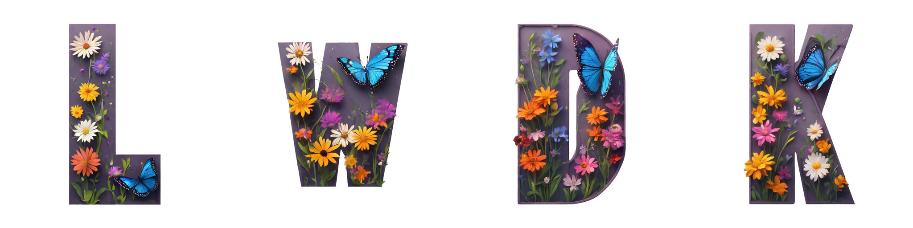
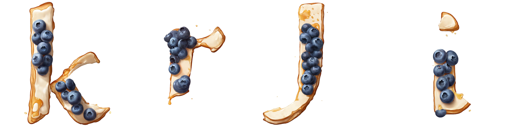

Abstract
Recently, the application of modern diffusion-based text-to-image generation models for creating artistic fonts, traditionally the domain of professional designers, has garnered significant interest.
Diverging from the majority of existing studies that concentrate on generating artistic typography, our research aims to tackle a novel and more demanding challenge: the generation of text effects for multilingual fonts.
This task essentially requires generating coherent and consistent visual content within the confines of a font-shaped canvas, as opposed to a traditional rectangular canvas. To address this task, we introduce a novel shape-adaptive
diffusion model capable of interpreting the given shape and strategically planning pixel distributions within the irregular canvas. To achieve this, we curate a high-quality shape-adaptive image-text dataset and incorporate
the segmentation mask as a visual condition to steer the image generation process within the irregular-canvas. This approach enables the traditionally rectangle canvas-based diffusion model to produce the desired concepts
in accordance with the provided geometric shapes. Second, to maintain consistency across multiple letters, we also present a training-free, shape-adaptive effect transfer method for transferring textures from a generated
reference letter to others. The key insights are building a font effect noise prior and propagating the font effect information in a concatenated latent space.
The efficacy of our FontStudio system is confirmed through user preference studies, which show a marked preference (78% win-rates on aesthetics) for our system even when compared to the latest unrivaled commercial product, Adobe Firefly.
Method Overview
Results - English


Results - Korean
Results - Japanese